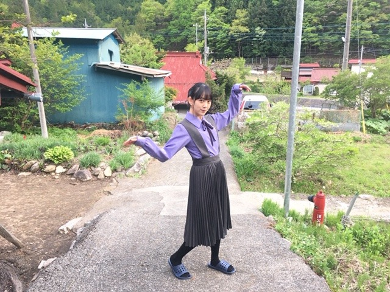
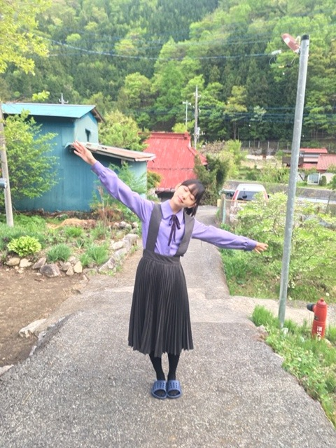

2019/0310Sun泡は苦かった
どうも！
金柑ってまるごと食べても美味しいけど
じゃあみかんは丸ごと食べちゃダメなのかな？
いまいちフルーツのどれが皮ごと食べてよくて
だめなのか把握できてません...
逐一、周りの人に聞いてから食べています。笑
紅白で着たこのドレス、色合いも形もどタイプです✨
かわいい衣装が着れて嬉しいなぁ
衣装さんに感謝感謝です

今日のパーカーはQALBの！
おっきめにきて フードをすっぽり被って楽屋でお昼寝をよくしてます。笑

パッション！らんぜたむ！
ザンビ絶賛放送中です✨✨
怖いかなー？？
でもなんだかんだ人が1番怖いなってホラー作品を観ると毎回思います、


吾輩は平和主義である〜
＼(^-^)／
あ、今日の乃木坂工事中で
私、フラれます。
疑似体験をしたら
こういうのすごくめんどくさそうだなって思ってしまったので私には向いてないですね〜
でもお芝居の中では全力で日村勇紀さんを引き止めますので！見てください✨
では
今日は寝る前に生ハム食べよーと
2019/03/10 19:54


コメント(476)
まんまと釣られました(*´ー｀*)
未央奈にとっては一瞬でも、私にとっては とっても幸せな時間でした(^^)
まさかネイルを褒められると思ってなかったから嬉しかったな
また機会があれば行きます！
随分のどかなところでの写メ＼(^^)／
わたくし、、みお造も平和主義
乃木坂工事中、、、、フラれる(T-T)
リアルタイムで観ます。
怖いけど、観てしまうよね。ほん怖とかもそうなんよね。ザンビも。
堀ちゃんに癒されたんで、日本VSメキシコでも見よ。
皮ごと食べれるのは、最近のぶどうが特に良く分からないです。
写真、可愛いです。
癒されます。
黒のパーカーも似合いますね。
ザンビは観てますよ。面白いです。
一応、皆さんはお祓いを受けてるのかな。
花粉症なのか風邪なのか、体調はイマイチですが、お互いお身体には気をつけてくださいね。
頑張って行きましょう！
全握お疲れさまでした。 今日高校のテストで15時頃からメッセに行って未央奈に初めて会えてとても嬉しかったです。猿人形のホーリー持つ姿とても可愛らしかったです。未央奈さんに会って今までの受験の疲れがぶっ飛びとても癒されました。ありがとうございました。また機会があれば未央奈さんに会いにいきたいです。
今日の工事中楽しみにしてまーす。
それではサヨウナラ
乃木坂工事中ではふられる
堀未央奈さんブログ更新ありがとう⁉︎
握手会お疲れ様でした。
楽しめたかな⁇(^ ^)
パーカー姿も可愛いね〜〜⁉︎
俺も黒のパーカーよく着ます。
楽だもんね〜〜
ザンビは毎週ドキドキ
しながら見てるよ〜〜⁉︎
レコメンで楽しくテンション
上がった状態からの
ドキドキ感がたまらないですわ〜
来週も楽しみ〜〜(^ ^)
フルーツの皮は
周りの人によく聞いて
健康を害さないように
食べてね⁉︎
オフショルセクシー
平和主義！
ザンビ、マジ怖いです。
小中学生は多分夜間のオンタイムに
観ることは避けた方がいいでしょう（笑）
乃木中は観ますね！！！
私には向いていないって、
去るものは追わず・・・なんでしょうか（笑）
楽しみです！！！
これからも未央奈ちゃんらしく
頑張ってくださいね！！！
応援しています！！！
ゾンビ系のドラマだとウォーキングデッド見てるかなぁ！そういや明日から友達と石川県行くんだよね！温泉入ってくる！
ももんが
今日の全握お疲れ様、ミニライブ参加したよ！
友達がみささん推しで握手しに来たのに体調不良で休みだったからめっちゃ落ち込んでたなんかこっちまで悲しくなってくる！
やっと高校卒業しました、なんか寂しい気持ちと嬉しい気持ちで何だか複雑です！
まぁ4月から専門学校があるんですけど、いち早く家の花屋手伝いながら毎日勉強してます！
好きなことを勉強してると数学とかよりも楽しくて時間も早く感じるのはなんでやろな〜笑
最近毎回コメント書いてるんやけど送れてるか分からへんから送れてたら前のコメントにも書いたからしつこいな笑
コメ読みお疲れ様でーす★
またね〜
お疲れ様でした！
何時も可愛いわ、らんらんも
パーカー未央奈がめっちゃ好き…
ザンビが常に見てる見てる
以前ゾンビ未央奈が可愛い何ですけれども、
ザンビにならないでよ
ずっと応援しているよ
めっちゃ好きやで！
泡ね～
最初だけだな～飲むの･･･
（合ってる？合ってる？）
私は米かな～
柑橘トーク！！！(笑)
あっ！サイダー飲みました！
柑橘類は皮は食べませんね～
桃も食べませんね～
葡萄系は食べますね～
この衣装セクシーですよね。
って下の写真･･･黒！！(笑)
あれ？この村･･･
飛･･･あっ！齋藤さん。齋藤（あ）さん。
え？呼び方はなんでもいい？(笑)
フラれるんだ(笑)
あ～～それで泡･･･
生ハムと･･･
頻繁に更新してくださり，嬉しいです❀·°
制服姿、かわいいです！！
乃木中楽しみにしてます～♡♡♡
未央奈パーカー姿可愛い
今日の乃木中楽しみ
来週の個握早く行きたい
ブログありがとう！
全国握手会
お疲れ様でした☆
なんか花粉が襲ってくる今日この頃だったね〜笑
目はショボショボで痒いし、
なんか腰が張っているし、
コンディションはヤバしだった〜笑笑
今日は、ミニラの映像を全てDLしたよ♪
VRも試しにDLしてみたよ〜
結構すごいよね〜
最前列での視点だけだけど
3曲ともDLしたら
結構な臨場感で良きだった☆
ただ、花粉症の涙目(இɷஇ )で
映像に集中できない自分がいる。。
花粉がなくなったら
ゆっくり観る〜
気長に〜♪
あ〜グズグズぅ〜
今宵は、ゆっくり寝てね♪♪
おやすみおな〜♪
いい夢みおな〜☆
わたる⊿
紅白衣装かわいかったね〜！
絶対未央奈好きな衣装だと
思った〜！！色味も刺繍もかわゆい（＾ω＾）♡
乃木坂ちゃんの衣装さんは本当に神だね〜！！
未央奈の茶髪加減よきね〜！
もっと暗くするの？？
未央奈にピンクオレンジ系いれて欲しいな〜
絶対似合う〜
そういえば今日食卓に金柑でてたけど
食べ方わからなくて食べなかった〜
皮も食べるのね…！
ばいぃ
今日の全握、まさかの体調崩して行けず…
悔しい〜。
アルバムの個握は絶対行きますね！
紅白のドレス、めちゃくちゃ良いよねー。
すごく似合ってる(*^^*)
今日の乃木中はリアタイで観ます！
楽しみ〜(*´-`)
でわ、またコメントしますっ
ザンビ毎週見てるよー。怖いけど未央奈と与田ちゃんと飛鳥が映ると怖さより可愛さが強い！話が変わるけど、今日幕張てやった握手会行ったよ！未央奈のところにはいけたかった。ごめんね。
今日は握手会ありがとうございました！！
すっごくすっごく楽しかったです！！！
ほんとに今日未央奈ちゃんに会えてよかったです！！
お疲れ様！！ゆっくり休んでね〜
ザンビ怖くて1度も見れてません……録画はしてるからいつか見れたらいいなぁー
乃木中は日曜の楽しみの1つなので必ずみます！！
楽しみ〜
今日はほんとにありがとう！！いい思い出になりました！！
今日初めて握手会行きました！！
最高でした！
これからも頑張ってください
さすが、オフショル協会だね(^-^)
今夜の乃木中で、未央奈が振られるという事だけど、リアルなら絶対あり得ないな笑笑
可愛い未央奈を振る理由がないしね( ◠‿◠ )
握手会お疲れ様( •ᴗ• )
パーカー可愛い！
お揃いしたいな⸜(*ˊᵕˋ* )⸝
ザンビはいつもドキドキするけど、
ホラー好きだから毎週楽しみ♡
この前の与田ちゃんを守る未央奈ちゃん！
すごくイケメンだったな〜( ⸝⸝•ᴗ•⸝⸝ )
乃木中でフられちゃうの！？( •︠ˍ•︡ )
心してみるね( ´•̥⌓•̥` )！！！
未央奈ちゃんの好きなカラー、くすみブルーのドレスお似合いです。
乃木坂工事中見ますね、楽しみです。
寝る前の生ハム、リッチですね。うらやましい
また明日からも頑張って下さーい
今日の握手会の感想は前のブログに書いちゃいました！
ので時間あれば、ぜひ読んでね♪
ありがとうございました❤️❤️
ザンビ、怖いよ～！
でも未央奈出てるし、乃木坂ちゃんの作品だから観てる！
一人で観れないから、母と一緒に観てる！笑
今日はこのまま乃木坂工事中、リアルタイムで観れるので観るよ♪
あと2日で高校入試です。
緊張するけど絶対合格して3月31日の大阪全握に行くからねー
ザンビめっちゃ怖いよねー！！
今日の乃木中楽しみにしてます
乃木中録画したよ〜〜
体調に気をつけて頑張ってください
ザンビも乃木中も毎週楽しみにしてるよ✨
ザンビにならないでね笑
最近は皮が食べられるブドウがあるんだよね。食べたことがあるんだけど、スッゴく美味しかったよ。
果物は皮を剥いて食べるのが基本なんだろうけど、品種改良等で皮も食べられる果物はどんどん増えていくんだろうね。
俺も紅白のドレスは色(俺は青系の色が大好きです)も形もタイプだよ。
それにアクセサリーも可愛いよね。
乃木坂のWebショップで予約している3月のランダム生写真がこの衣装なんだよ。
この衣装を着た未央奈の生写真がほしくて予約しちゃったよ。未央奈の生写真が当たりますように。
ザンビは・・・ラストに向けてどんどん怖さが増していくね
あまり怖いのは得意じゃないけど未央奈が出演してるから毎週欠かさずに猫と(寒いらしく俺の布団の上で寝てるので)観てるよ。もうすぐ最終回だろうから、ドラマが終わっちゃうのは寂しいけど、未央奈が演じる「みのりちゃんがどうなるのか？」「ラストがどうなるのか？」楽しみだよ。
今度の日曜日に名古屋で開催される個別握手会に参加する予定だからヨロシクね。
ゴロ～
紅白見てました。衣装超似合ってた！
大阪での握手会行くよー！
僕はレモン味のお菓子やジュースが好きっ！
レモンって、果物そのままで食べる事はないから、レモン味って特別な気がする。
皮ごと食べたいのは栗、房ごと食べたいのはぶどう。
皮を剥くのがめんどくさい食べ物はあまり食べないんだよなぁ～。
強い農薬使ってないやつなら洗えばいける気がする……
ちなみに人参と大根のスティックは皮ごと派です。
ミカンの皮はみかん風呂した時についつい食べたことが……ちょっと苦い……
ミカンの皮もビールの泡も、苦いけどそのうち癖になる〜＼(^-^)／
でも事故って何も言えませんでした笑笑
絶対見るね！
柚子の皮を蜂蜜に漬けておいて、それをお湯溶かしてで飲むと美味しいよ！
では！
やっぱり、未央奈が一番かわいかった！！
はむはむ＾＾
ブログ更新お疲れ様です。
また握手会に参加したいですね～。
当たらないとダメだけど
乃木中楽しみにしてますね。
ではまた。
握手会お疲れ様
フラレる未央奈を観るのはかなりレアだろうから楽しみにしてるね
未央奈大好きやでぇ～
コメントする